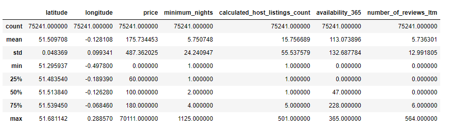

Exploring Factors and Features Affecting Airbnb Listing Prices
Background
Airbnb was founded in 2007 when two Hosts welcomed three guests to their San Francisco home and has since grown to 4 million Hosts who have welcomed more than 1 billion guest arrivals in almost every country across the globe (Airbnb, 2022). Airbnb has successfully disrupted the traditional hospitality industry as an increasing number of travelers, not just those looking for a good deal, but also business travelers, use Airbnb as their primary lodging source. The platform also allows homeowners to make some extra cash by renting out a room or property to visitors, and this is certainly the case in London where the amount of properties has dramatically increased.
The beautiful capital city of England & United Kingdom – London, is one of the most visited cities in the world. Despite the restrictions implemented amidst the pandemic, this city remains to be one of the most popular destinations visited by numerous travellers across the globe. Relatively, as travellers look for their ideal place to stay in London, the demand for Airbnb is expected to rapidly increase. According to property management, over 50% of guests prefer to stay at an Airbnb than a traditional hotel for various reasons and an experienced host can earn an average of $10,000 annually.
While this may sound enticing to Airbnb hosts who would like to invest their time and money, we must keep in mind that some neighbourhoods may not offer an equal amount of return on investment.
AirBnb has become a dominant participant in the online-rental marketplace industry, as tourists and business visitors, among others, use it to rent rooms, apartments, and other available homestay accommodations. The company was a pioneer in creating Homestay as a popular style of hospitality and lodging in which travelers share a home with a native of the city they are visiting for a pre-arranged period. Due to its popularity and reach out in the tourist and hospitality industries a huge amount of data is generated daily. The organization has accumulated massive amounts of information from the cities in which it operates, including user reviews, location descriptions, and rental statistics. Respectively, this project shows exploratory data analysis, visualizations, dashboard, reports, interactive charts, and many other fascinating insights into the Airbnb dataset of London.
Purpose of the Project
• This project aims to identify the factors and features of an Airbnb listing that make it more expensive. It provides insights into the factors affecting the price of Airbnb listings and offers guidance to hosts and travelers in optimizing their listings or finding suitable accommodations.Research Questions
1. Are there any significant correlation between quantitative metrics?2. What are the most popular room types?
3. What are the most popular neighbourhoods?
4. How does the price change depending on room type and neighbourhood?
5. How does the number of reviews change depending on room type and neighbourhood?
6. What type of property dominates in each neighbourhood?
7. How does the availability change depending on room type and neighbourhood?
8. How does the hosts' listings count change depending on room type and neighbourhood?
9. How many hosts have different types of property?
Exploratory Analyis
1. Are there any significant correlation between quantitative metrics?
For all categories we can see a significant difference between average and median values. It means that values of small share of listings can distort the overall picture. For example, the average price is 175 pounds/night but 50% of listings are cheaper than 100 pounds/night. The reason of this disproportion is that there are some very expensive property (maximum price is 70,111 pounds/night). That's why it will be better to analyze median values instead of average where it's more appropriate.
2. What are the most popular room types?


3. What are the most popular neighbourhoods?
No surprise that the most popular neighboorhoods are located in the centre of London. The confident leader is Westminster (8550 listings). The only exception is the City of London (445 listings) because it is the smallest neighbourhood and there you can't find many residential properties. The least popular is Sutton (310 listings).
4. How does the price change depend on room type?
As you remember, Shared room and Hotel room are significantly less popular than the other two categories. I suppose that it can be partly explained by their price. Usually hotel rooms (213 pounds/night) are more expensive than entire homes/apartments (150 pounds/night). Also, the latter can be a more advantageous option (especially, in terms of price per person) for a group of travelers - friends or family. As for shared rooms, they are clearly the cheapest - median price 41 pounds/night against 52 pounds/night for private rooms. But I suppose that a lot of people prefer to pay a little bit more to have private space. Anyway, even with the lowest price there aren't many such listings on the market.
5. How does the price change depend on neighbourhood?
The most central neighbourhoods are on top in terms of price, like it was with the distribution of quantity of listings by the neighbourhoods. But then we could see clearly the leader and Top-10 neighbourhoods. Let's look how it will be this time.
There are three much more expensive neighbourhoods than the others: City of London (175 pounds/night), Kensigton and Chelsea (179 pounds/night), Westminster (179 pounds/night).
Below Top-3 the difference is rather smooth.
Also, there are only five neighbourhoods where the median price is higher than those for the whole London (100 pounds/night). So there are a lot of options to save traveler's budget.
6. How does the number of reviews change depend on neighbourhood?

There are two surprising results:
• City of London is the clear leader with almost 10 reviews/listing while it has only 445 listings (4th rank from the end).
• Camden - on the other hand popular neighbourhood with only 4943 listings - is on the 2nd place with8.4 reviews/listings.
Likewise, it can be explained by the fact that more popular neighbourhoods may have many inactive listings without reviews. It can lower average value of the metric.
Unfortunately, we don't have information about character of the reviews, whether they are positive or negative. So we can't evaluate customer satisfaction by these numbers.
For the customer satisfaction ratio and the sentiment analysis of positive and negative reviews, have a look on this analysis Click Here.
7. How does the number of reviews change depending on room type?
For the same reason, this result was also a little bit surprising for me at the first sight. But the median value for number of reviews for last 12 months for all listings is 0. So apparently the lower values for Entire home/apt and Private room are explained by the fact that in these categories there are much more listings with no reviews than for Hotel room and Shared room.
8. What type of property dominates in each neighbourhood?
Let's look where it's easier to find an available property and what type of property it will be. First of all, let’s explore how many properties of each type we can find in each neighbourhood.
• Number of neighbourhoods where dominates Entire home/apt - 23
• Number of neighbourhoods where dominates Private room - 10
• Number of neighbourhoods with equal quantity of Entire home/apt and Private room - 0
• Number of neighbourhoods without Hotel room – 15
As you remember, Entire home/apt (45714 listings) and Private room (28910 listings) dominate the market. While in general there are much more Entire home/apt listings, this category is the leader only in 23 of 33 neighbourhoods. In the other 10 neighbourhoods the leading category is Private room.
Also, there are 15 neighbourhoods without hotel rooms at all.
9. How does the availability change depending on room type?
Usually hotel rooms are available for booking most days of the year (276.5 in our case). If people live in their property, they can't rent entire property or a private room very often. So 50% of entire homes/apartments are available less than 56 days per year, 50% of private rooms - less than 31 days per year. Shared rooms looks more available. Half of them can be booked more than 88 days per year.
10. How does the availability change depending on neighbourhood?
There is only one location; Hackney where 50% of listings aren't available at all. That's rather strange. For example, in Hackney there are around 3304 entire homes/apartments and around 2160 private rooms. Maybe many of these listings aren't active anymore or there's some mistake in data.
Surprisingly, two leaders are Bexley and Hillingdon. There aren't hotel rooms which typically are the most available. But 50% of entire homes/apartments (median more than 228 days per year) and private rooms (median more than 172 days per year) in these areas are very available (look at the plot below). So we can suppose that their hosts actively use this property as a source of passive income while they live somewhere else.
These are just two insights. I believe that closer look at availability in each neighbourhood can reveal a lot of interesting information about the structure of Airbnb market in London.
Many zeros in hotel room category can be explained by the fact that there are no such listings in many neighbourhoods. Zeros in other categories are less comprehensible. A more detailed analysis is needed to find the reason.
More than 50% Shared room listings in some peripheral neighbourhoods are available most days of the year. That means that their hosts actively look for an additional income.
There are only four neighbourhoods for Entire home/apt listings and no neighbourhoods for Private room listings where median availability is above 200 days per year.
Also, we can note that in two popular and expensive neighbourhoods - Westminster, Kensington, and Chelsea - half of the Entire home/apt listings are available less than 95 days per year and Private room listings are available less than 53 days per year. So, it can be easier to find a hotel room if you want to stay there.
11. How does the hosts' listings count change depending on room type?

Most hosts are small players on the market. Half of Entire home/apt and Private room hosts have only 1 listing, half of Shared room hosts - 1 listings. Even in Hotel room category 50% of hosts have only 6 listings.
On the other hand, there are also large players. That's why average values are much bigger. In Hotel room category - 45.5 listings/host, in Entire home/apt - 19.7 listings/host, in Private room - 9.4 listings/host, in Shared room - 4.2 listings/host.
Note! It doesn't mean that each host has listings only in one category. It's possible that some of them rent different types of property. We can check it.
12. How many hosts have different types of property?
Entire home/apt hosts count - 29273
Private room hosts count - 20734
Shared room hosts count - 321
Hotel room hosts count - 71
Only entire home/apt hosts count - 26597
Only private room hosts count - 18007
Only shared room hosts count - 218
Only hotel room hosts count - 41
Entire home/apt & Private room hosts count - 2649
Entire home/apt & Shared room hosts count - 38
Entire home/apt & Hotel room hosts count - 12
Private & Shared room hosts count - 80
Private & Hotel room hosts count - 22
Shared room & Hotel room hosts count - 3
Entire home/apt & Private room & Shared room hosts count - 17
Entire home/apt & Private room & Hotel room hosts count - 6
Entire home/apt & Shared room & Hotel room hosts count - 0
Private room & Shared room & Hotel room hosts count - 1
Entire Home/apt:
= Only entire home or apt: 26597* 100% / Entire home or apt hosts count – 29273
= 90.85 %
• More than 90% of 29273 Entire home/apt hosts rent only this type of property.
• More than 86% of 20734 Private room hosts rent only this type of property.
• More than 67% of 321 Shared room hosts rent only this type of property.
• More than 57% of 71 Hotel room hosts rent only this type of property.
• 2649 hosts rent Entire home/apt and Private room listings.
13. How does the hosts' listings count change depending on neighbourhood?
As we already know, there are many small players on the market. Only 25% of hosts have more than 4 listings. So it's not surprise that median values for host listings count by neighbourhood are much smaller than the average values. There are only 9 neighbourhoods where the median is more than 1 listngs/host and only 3 neighbourhoods where the median is above 2 listings/host (City of London, Westminster, Kensingtom and Chelsea).
Note! It doesn't mean than a host can have listings only in one neighbourhood. Hosts can have listings in different neighbourhoods.
The smallest average value is 3.3 listings/host in Bromley. It means that there is, at least, one big player in each neighbourhood.
What is also important: these plots clearly show the most popular neigbourhoods for big players. Generally, they have good location. They are central like City of London, Kensingtom and Chelsea, Westminster, Brent, Hamden, etc. Or they are close to Heathrow Airport like Hounslow and Kingston upon Thames.
Conclusion:
In conclusion, the analysis of Airbnb listings in London provides insights into several key aspects. Firstly, it is evident that the most popular neighborhoods are predominantly located in the center of London, with Westminster being the leader in terms of the number of listings. However, the City of London, being the smallest neighborhood, has relatively fewer residential properties available.
Significant differences between average and median values of quantitative metrics highlight the presence of outliers in the dataset. Therefore, using median values is more appropriate for analyzing the data and obtaining a more representative picture.
Regarding the price, hotel rooms tend to be more expensive compared to entire homes/apartments, which can be a more cost-effective option for group travelers. Shared rooms, on the other hand, are the most affordable but are less common on the market.
When examining the price variation across neighborhoods, central areas such as the City of London, Kensington and Chelsea, and Westminster stand out as the most expensive. However, there are several neighborhoods where the median price is below the overall London median, providing budget-friendly options for travelers.
The number of reviews per listing varies across neighborhoods, with the City of London and Camden displaying unexpected results. This may be influenced by the presence of inactive listings without reviews, making it difficult to evaluate customer satisfaction based solely on review numbers.
The availability of listings depends on both the room type and neighborhood. Hotel rooms generally have high availability throughout the year. Entire homes/apartments and private rooms, as they are often occupied by the hosts, have lower availability. Notably, shared rooms tend to have higher availability, particularly in peripheral neighborhoods, indicating hosts actively seeking additional income.
Hosts with multiple listings are present in the market, but the majority of hosts are small players with only one listing. Median values for host listings count by neighborhood are generally smaller than the average, indicating the presence of a few large players in each neighborhood. The most popular neighborhoods for hosts with multiple listings are often centrally located or close to Heathrow Airport.
Overall, this analysis provides insights into popular room types, popular neighborhoods, price variations, availability, and the distribution of hosts' listings in the London Airbnb market. Further investigation can reveal additional valuable information about the market's structure and dynamics.